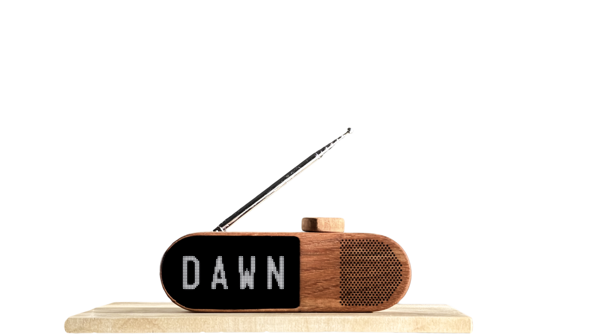
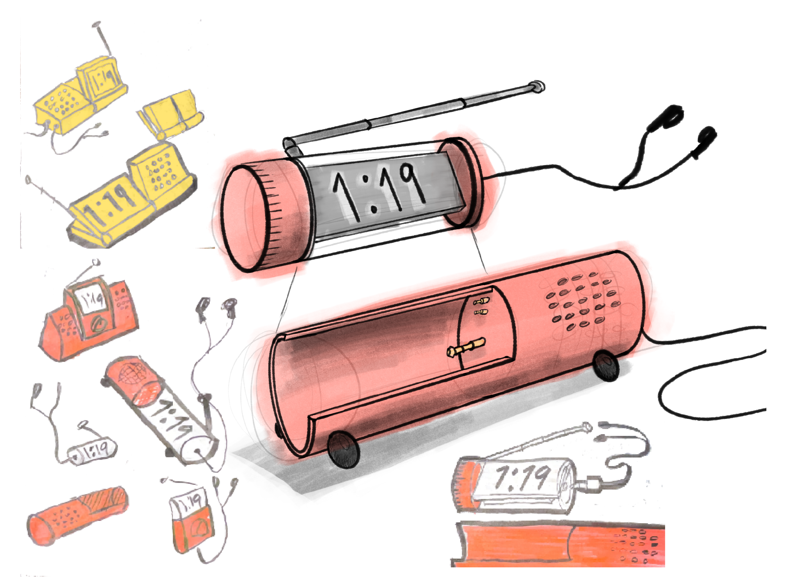
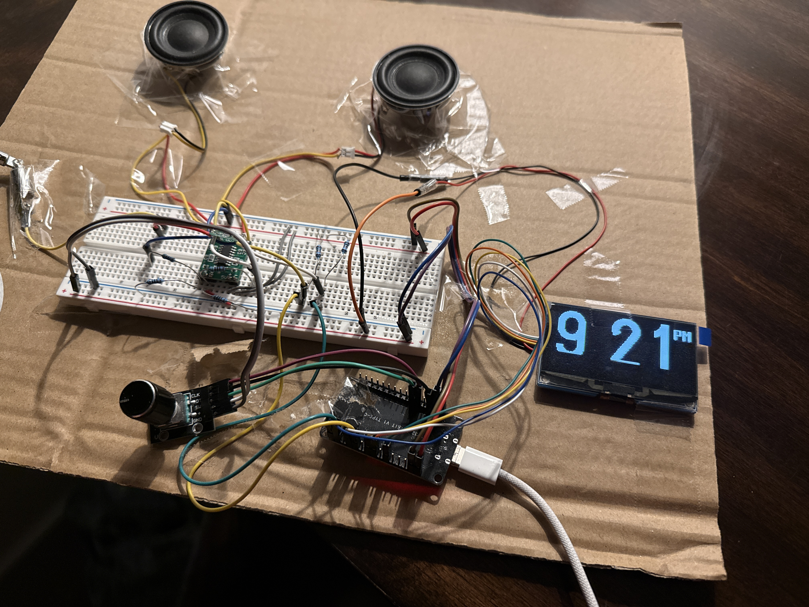
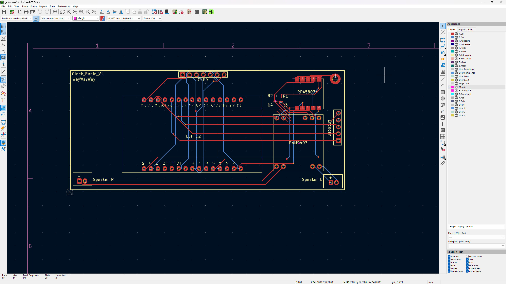
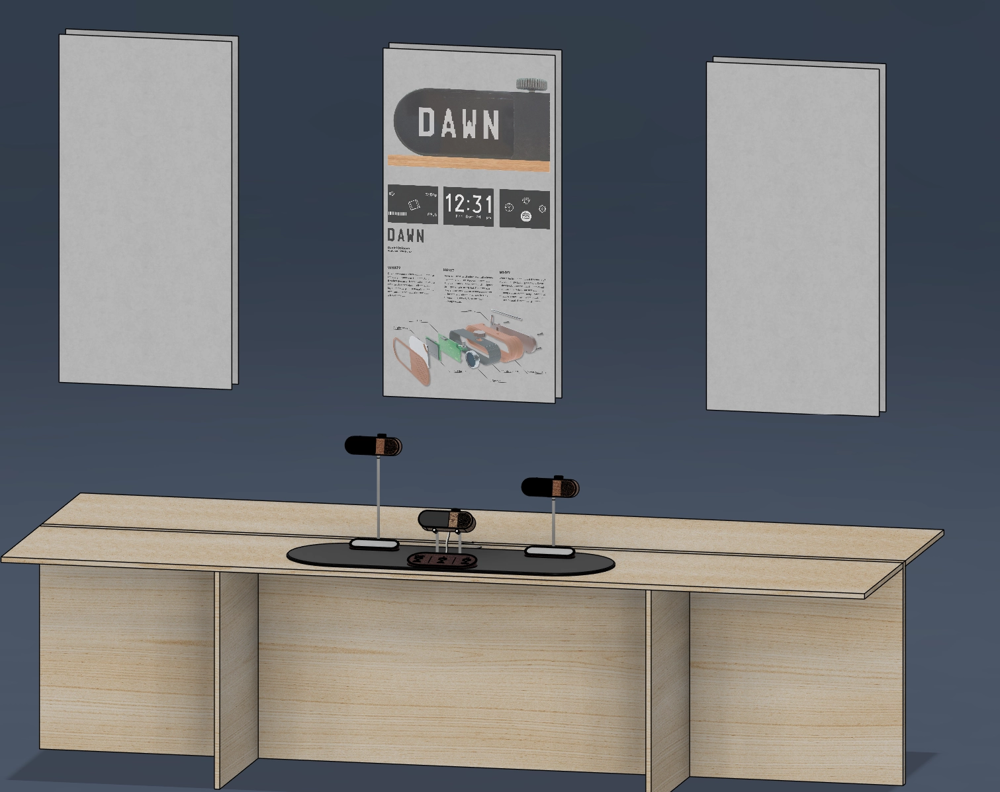
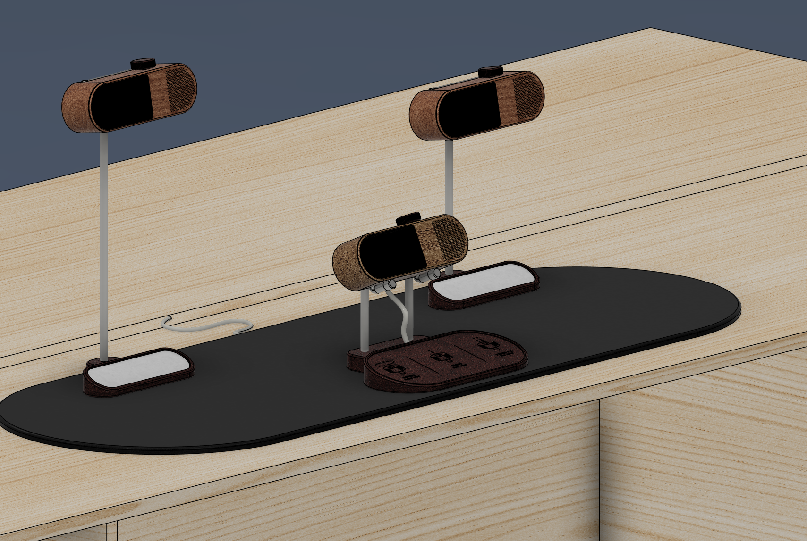
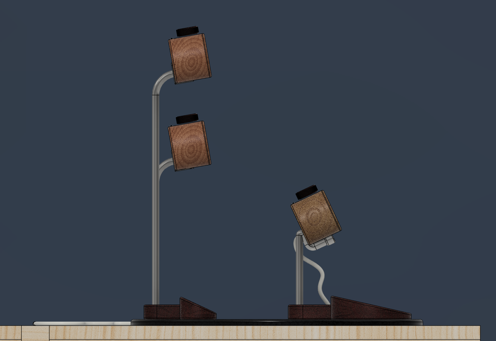

DAWNClock Radio
Physical Product Design & User Experience
What’s the first thing you did this morning? You probably picked up your phone.
Dawn is a wooden clock radio designed to take the phone’s place on your nightstand. It shows the time, lets you explore the airwaves, and wakes you with local community radio. All handled through a single rotary dial. It has no notifications, no feeds. Instead it connects you to something nearby — a local voice, a familiar station, the sounds of your city waking up with you.


Audience
Dawn was designed for those young adults whose mornings and evenings have been taken over by their phones. Despite being more connected than ever, they feel disconnected from where they actually live, reaching for a screen without thinking, staying up too late, and feeling guilty at 3am.

Most media is active, asking you to scroll and decide. FM radio is live and passive. You tune in and something is already happening and has been happening. It builds a greater sense of community.
Process
The Constraint. I took inspiration from Teenage Engineering’s Playdate↗, in which the input becomes the product’s identity. As well as the iPod↗, whose click wheel handled browsing, selecting, and confirming. I wanted DAWN to do both. I challenged myself and aimed for just one input — a dial.


Form. Sketching landed me on a cylinder, integrating a dial into the outer edge. I then made a cardboard model with PCB, which ended up being much larger than anticipated. Pressing the dial in with one hand would also slide it around. From there the pill form emerged. It was compact, a unique form, and usable with one hand.

Material. The first prototype was made from wood out of necessity. But when the dial clicked in for the first time, the wood resonated a warm and whole tone that captivated me. I then produced 3 housings, hand-carved from wood, each assembled with a laser-cut faceplate and a hand-shaped body, held together with a 3D printed bracket. A dark acrylic screen hides the internals while letting the OLED screen shine through.

Electronics. I designed a custom PCB from scratch to unify all components onto a single board, eliminating the messy wiring that earlier prototypes required. Designing the circuit and PCB meant the physical form wasn’t constrained by off-the-shelf breadboards. It’s what made its size possible.



Interface. The device has four screens: clock, radio, alarm, and settings, mapped to three inputs: rotate, press, and double-press. This meant that one motion carried different meanings in different contexts. Rotate could adjust volume or navigate. Each screen needed its own logic while still feeling like one coherent gesture language. Smooth animations and transitions give weight so the interface feels as considered as the object around it.
Outcomes

This project required working across product design, electronics engineering, firmware, and interface design. Each domain’s decisions directly affected the others: the PCB layout shaped the form, the form constrained the interface, and the interface fed back to the PCB. Managing those dependencies meant constantly shifting between mindsets and roles, learning new skills and when to recognize a decision in one domain was creating a problem in another.


